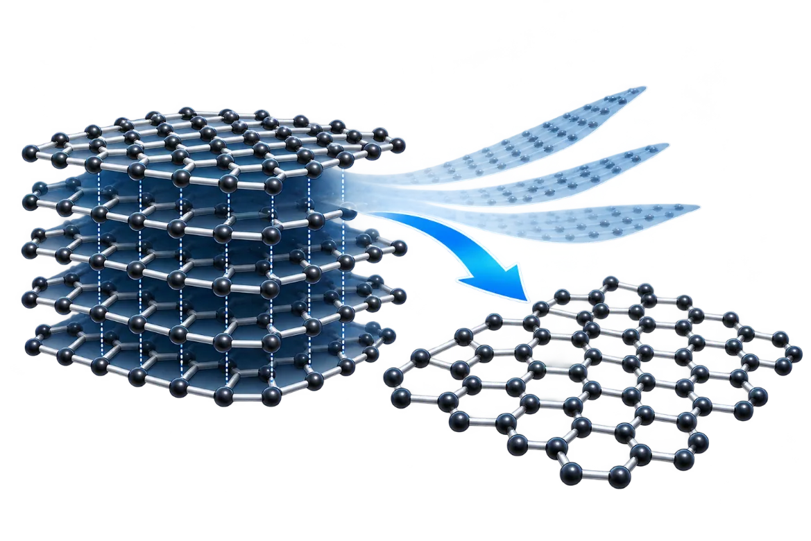

Extremely strongแข็งแรงมาก
100–200× stronger than steel by weight.
แข็งแรงกว่าเหล็ก 100–200 เท่า เมื่อเทียบตามน้ำหนัก
Graphene Technology
Transforming Carbon-Based Waste into High-Value Graphene through Advanced Synthesis Technology
A graphene synthesis innovation using Long Pulse Joule Heating (LPJH), developed by the Graphene Innovation Center for Carbon Neutrality at the Synchrotron Light Research Institute. นวัตกรรมการสังเคราะห์กราฟีนด้วยเทคนิคความร้อนกระตุ้นแบบพัลส์ยาว (Long Pulse Joule Heating: LPJH) พัฒนาโดยศูนย์นวัตกรรมกราฟีนเพื่อความเป็นกลางทางคาร์บอน สถาบันวิจัยแสงซินโครตรอน

What is Graphene?
Graphene is a two-dimensional carbon nanomaterial: carbon atoms arranged in a hexagonal lattice that looks like a honeycomb. Ideal graphene is only one atomic layer thick.
กราฟีน (Graphene) เป็นวัสดุนาโนคาร์บอนสองมิติ (Two-Dimensional Carbon Material) ที่ประกอบด้วยอะตอมของคาร์บอนจัดเรียงตัวเป็นโครงสร้างตาข่ายหกเหลี่ยมคล้ายรังผึ้ง (Honeycomb Structure) โดยกราฟีนในอุดมคติมีความหนาเพียงหนึ่งชั้นอะตอม
Its high mechanical strength, good electrical and thermal conductivity, light weight and flexible structure give it potential in composites, electronics, energy storage and many industrial products.
ด้วยความแข็งแรงเชิงกลสูง การนำไฟฟ้าและนำความร้อนที่ดี น้ำหนักเบา และความยืดหยุ่นของโครงสร้าง กราฟีนจึงมีศักยภาพในการพัฒนาวัสดุคอมโพสิต อุปกรณ์อิเล็กทรอนิกส์ วัสดุกักเก็บพลังงาน และผลิตภัณฑ์อุตสาหกรรมหลากหลายประเภท

Properties
100–200× stronger than steel by weight.
แข็งแรงกว่าเหล็ก 100–200 เท่า เมื่อเทียบตามน้ำหนัก
High electron mobility, suited to electrical circuits and sensors.
อิเล็กตรอนเคลื่อนที่ได้สูง เหมาะกับวงจรไฟฟ้าและเซนเซอร์
Can bend and fold without losing its structure.
โค้งงอและพับได้โดยไม่เสียโครงสร้าง
Conducts heat better than copper (~5,000 W/m·K).
นำความร้อนได้ดีกว่าทองแดง (~5,000 W/m·K)
Its nanoscale structure can pierce and damage bacterial cell walls.
โครงสร้างระดับนาโนเมตรสามารถเจาะทำลายผนังเซลล์ได้
Absorbs heat and releases it back as far-infrared (FIR) energy.
รับความร้อนแล้วปล่อยพลังงานกลับออกมาในรูปของ Far-Infrared (FIR)
From waste to graphene
Biomass, plastics, tyres and carbon black are carbonized, then flash-heated in SLRI's DC-LPJH system to form turbostratic graphene.
ชีวมวล พลาสติก ยางรถยนต์ และคาร์บอนแบล็ก ผ่านการคาร์บอไนซ์ แล้วให้ความร้อนกระตุ้นด้วยเครื่อง DC-LPJH ของสถาบันฯ จนได้กราฟีนชนิดเทอร์โบสแตรติก
Sugarcane bagasse and leaves, corn, palm, plastics, tyres.
ชานอ้อย ใบอ้อย ข้าวโพด ปาล์ม พลาสติก ยางรถยนต์
Heated in a furnace under argon gas to make carbon powder.
เผาในเตาภายใต้ก๊าซอาร์กอนจนได้ผงคาร์บอน
Long Pulse Joule Heating: a controlled electrical pulse heats the carbon in seconds.
ความร้อนกระตุ้นแบบพัลส์ยาว ให้ความร้อนกับคาร์บอนภายในไม่กี่วินาที
High-purity, few-layer graphene powder.
ผงกราฟีนหลายชั้นความบริสุทธิ์สูง
Why LPJH
Exfoliation yields graphene oxide, with lower quality, low yield and high cost. LPJH produces pristine turbostratic graphene directly from waste.
วิธี Exfoliation ให้ผลผลิตเป็นกราฟีนออกไซด์ ซึ่งคุณสมบัติไม่เทียบเท่ากราฟีนบริสุทธิ์ ปริมาณผลผลิตต่ำและต้นทุนสูง ส่วน LPJH ผลิตกราฟีนบริสุทธิ์จากวัสดุเหลือทิ้งได้โดยตรง
Converts carbon-containing waste into high-value graphene in just a few seconds.
เปลี่ยนวัสดุเหลือทิ้งที่มีคาร์บอนเป็นองค์ประกอบให้เป็นกราฟีนมูลค่าสูงภายในไม่กี่วินาที
Around 10–20 stacked layers, with 95.3 at.% carbon content.
ชั้นซ้อนกันประมาณ 10–20 ชั้น มีปริมาณคาร์บอน 95.3 at.%
Production cost under 10,000 THB/kg; electricity under 180 THB/kg.
ต้นทุนการผลิตต่ำกว่า 10,000 บาท/กก. ค่าไฟฟ้าต่ำกว่า 180 บาท/กก.
Identity and purity confirmed with XPS and NEXAFS, and tested in real use with several companies.
ยืนยันอัตลักษณ์และความบริสุทธิ์ด้วย XPS และ NEXAFS และทดสอบใช้งานจริงร่วมกับหลายบริษัท
See full specifications and resultsดูสเปกและผลการวิเคราะห์ทั้งหมด →
Industrial Applications
SLRI tests in concrete and mortar show potential to improve compressive and flexural strength.
ผลทดสอบในคอนกรีตและมอร์ต้าแสดงศักยภาพในการเพิ่มกำลังรับแรงอัดและความต้านทานแรงดัด
An additive for strength, durability, conductivity or other specific properties.
สารเติมแต่งเพื่อเพิ่มความแข็งแรง ความทนทาน การนำไฟฟ้า หรือสมบัติเฉพาะ
Reinforcement for stronger, more durable and conductive composites.
วัสดุเสริมแรงสำหรับคอมโพสิตที่แข็งแรง ทนทาน และนำไฟฟ้า
Smart textiles with conductivity and far-infrared emission, e.g. sportswear and health textiles.
สิ่งทออัจฉริยะที่นำไฟฟ้า นำความร้อน และปล่อยรังสี FIR เช่น เสื้อผ้ากีฬาและสิ่งทอเพื่อสุขภาพ
Electrodes, energy storage materials and conductive composites.
ขั้วไฟฟ้า วัสดุกักเก็บพลังงาน และวัสดุคอมโพสิตนำไฟฟ้า
Contact SLRI to learn about graphene technology and joint research and development.
ติดต่อสถาบันวิจัยแสงซินโครตรอน (องค์การมหาชน) เพื่อสอบถามข้อมูลเทคโนโลยีกราฟีน และโอกาสในการวิจัยและพัฒนาร่วมกัน